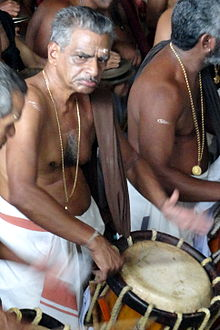
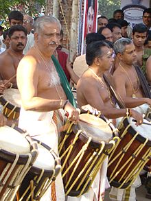

Sakthan Thampuran ordained the temples into two groups, namely "Paramekkavu side"
and "Thiruvambady side". These are headed by the principal participants, Paramekkavu
Bagavathi Temple at Thrissur Swaraj Round and Thiruvambadi Sri Krishna Temple at Shoranur road.
Western Group (Thiruvambady side)
Thiruvambadi Sri Krishna Temple
Laloor Bhagavathy Temple
Ayyanthole Sree Karthyayani Temple
Nethilakkavu Bhagavathy Temple

Peruvanam Kuttan Marar, leader of 'Chenda' group of Paramekkavu temple
Eastern Group (Paramekkavu side)
Paramekkavu Bhagavathy Temple
Chembukkavu Bhagavathy Temple
Panamukkumpally Sastha Temple
Choorakkottukavu Bhagavathy Temple
Pookattikkara - Karamukku Bhagavathy Temple
Kanimangalam Sastha temple

Kizhakkoottu Aniyan Marar, leader of 'Chenda' group of Thiruvambady temple
The Pooram is centered on the Vadakkunnathan Temple, with all these temples sending their processions to
pay obeisance to the Shiva, the presiding deity. The Thampuran is believed to have chalked out the program
and the main events of the Thrissur Pooram festival.